Background¶
This section is intended to give some insights into the mathematical background that is the basis of PyTrajectory.
Contents
Collocation Method¶
Given a system of autonomous differential equations
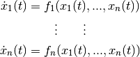
with 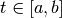 and Dirichlet boundary conditions
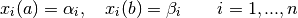
the collocation method to solve the problem basically works as follows.
We choose 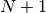 collocation points 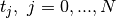 from the interval
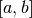 where  and search for functions
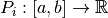 which for all 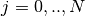 satisfy the
following conditions:
and search for functions
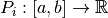 which for all 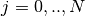 satisfy the
following conditions:
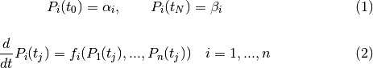
Through these demands the exact solution of the differential equation system will be approximated. The demands on the boundary values 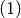 can be sure already by suitable construction of the candidate functions. This results in the following system of equations.

Solving the boundary value problem is thus reduced to the finding of a zero point
of 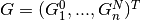, where  is the vector of all independent
parameters that result from the candidate functions.
is the vector of all independent
parameters that result from the candidate functions.
Candidate Functions¶
PyTrajectory uses cubic spline functions as candidates for the approximation of the solution. Splines are piecewise polynomials with a global differentiability. The connection points 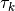 between the polynomial sections are equidistantly and are referred to as nodes.
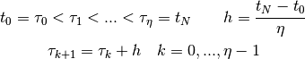
The  polynomial sections can be created as follows.
polynomial sections can be created as follows.

Then, each spline function is defined by

In addition to the steadiness the spline functions should be twice steadily differentiable in
the nodes  . Therefor, three smoothness conditions can be set up in all
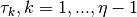.
. Therefor, three smoothness conditions can be set up in all
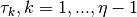.
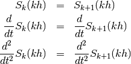
In the later equation system these demands result in the block diagonal part of the matrix. Furthermore, conditions can be set up at the edges arising from the boundary conditions of the differential equation system.

The degree  of the boundary conditions depends on the structure of the differential
equation system. With these conditions and those above one obtains the following equation system
(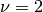).
of the boundary conditions depends on the structure of the differential
equation system. With these conditions and those above one obtains the following equation system
(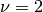).
![\setcounter{MaxMatrixCols}{20}
\newcommand\bigzero{\makebox(0,0){\text{\huge0}}}
\begin{equation*}
\underbrace{\begin{bmatrix}
0 & 0 & 0 & 1 & h^3 & -h^2 & h & -1 \\
0 & 0 & 1 & 0 & -3h^2 & 2h & -1 & 0 &&&& \bigzero \\
0 & 2 & 0 & 0 & 6h & -2 & 0 & 0 \\
& & & & 0 & 0 & 0 & 1 & h^3 & -h^2 & h & -1 \\
& \bigzero & & & 0 & 0 & 1 & 0 & -3h^2 & 2h & -1 & 0 &&&&&& \bigzero \\
& & & & 0 & 2 & 0 & 0 & 6h & -2 & 0 & 0 \\
&&&&&&&&&&& \ddots \\
& & & & & & & & & & & & 0 & 0 & 0 & 1 & h^3 & -h^2 & h & -1 \\
& & & & & & \bigzero & & & & & & 0 & 0 & 1 & 0 & -3h^2 & 2h & -1 & 0 \\
& & & & & & & & & & & & 0 & 2 & 0 & 0 & 6h & -2 & 0 & 0 \\
& & & & & & & & & & & & & \\
-h^3 & h^2 & -h & 1 \\
3h^2 & -2h & 1 & 0 &&&&&&&& \bigzero \\
-6h & 2 & 0 & 0 \\
& & & & & & & & & & & & & & & & 0 & 0 & 0 & 1 \\
& & & & & & \bigzero & & & & & & & & & & 0 & 0 & 1 & 0 \\
& & & & & & & & & & & & & & & & 0 & 2 & 0 & 0 \\
\end{bmatrix}}_{=: \boldsymbol{M}}
\cdot
\underbrace{\begin{bmatrix}
c_{1,0} \\ c_{1,1} \\ c_{1,2} \\ c_{1,3} \\ c_{2,0} \\ c_{2,1} \\ c_{2,2} \\ c_{2,3} \\ \\ \vdots \\ \\ \vdots \\ \\ \vdots \\ \\ c_{\eta,0} \\ c_{\eta,1} \\ c_{\eta,2} \\ c_{\eta,3}
\end{bmatrix}}_{=: \boldsymbol{c}}
=
\underbrace{\begin{bmatrix}
0 \\ 0 \\ 0 \\ 0 \\ 0 \\ 0 \\ \vdots \\ 0 \\ 0 \\ 0 \\ \\ \tilde{\alpha}_0 \\ \tilde{\alpha}_1 \\ \tilde{\alpha}_2 \\ \tilde{\beta}_0 \\ \tilde{\beta}_1 \\ \tilde{\beta}_2
\end{bmatrix}}_{=: \boldsymbol{r}}
\end{equation*}](../_images/math/367247c12dc88c25972d675e2b7ec09210aa2f96.png)
The matrix 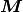 of dimension 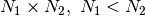, where 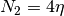 and  , can be decomposed
into two subsystems 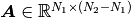 and 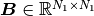.
The two dies are the vectors 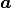 and
, can be decomposed
into two subsystems 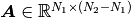 and 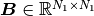.
The two dies are the vectors 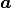 and  with the respective coefficients of 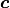.
with the respective coefficients of 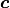.
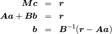
With this allocation, the system of equations can be solved for and the parameters in
remain as the free parameters of the spline function.
Use of the system structure¶
...
Levenberg-Marquardt Method¶
The Levenberg-Marquardt method can be used to solve nonlinear least squares problems. It is an extension of the Gauss-Newton method and solves the following minimization problem.
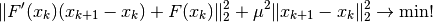
The real number  is a parameter that is used for the attenuation of the step size
is a parameter that is used for the attenuation of the step size  and is free to choose.
Thus, the generation of excessive correction is prevented, as is often the case with the Gauss-Newton method and leads to a possible
non-achievement of the local minimum. With a vanishing attenuation, 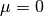 the Gauss-Newton method represents a special case
of the Levenberg-Marquardt method. The iteration can be specified in the following form.
and is free to choose.
Thus, the generation of excessive correction is prevented, as is often the case with the Gauss-Newton method and leads to a possible
non-achievement of the local minimum. With a vanishing attenuation, 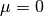 the Gauss-Newton method represents a special case
of the Levenberg-Marquardt method. The iteration can be specified in the following form.
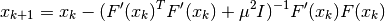
The convergence can now be influenced by means of the parameter . Disadvantage is that in order to ensure the convergence,
must be chosen large enough, at the same time, this also leads however to a very small correction. Thus, the Levenberg-Marquardt
method has a lower order of convergence than the Gauss-Newton method but approaches the desired solution at each step.
Control of the parameter ¶
The feature after which the parameter is chosen, is the change of the actual residual

and the change of the residual of the linearized approximation.
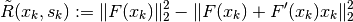
As a control criterion, the following quotient is introduced.

It follows that 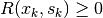 and for a meaningful correction  must also hold.
Thus,
must also hold.
Thus,  is also positive and 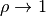 for 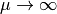.
Therefor should lie between 0 and 1. To control two new limits 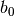 and 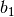 are introduced
with 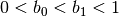 and for 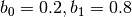 we use the following criteria.
is also positive and 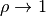 for 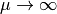.
Therefor should lie between 0 and 1. To control two new limits 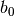 and 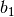 are introduced
with 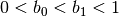 and for 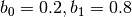 we use the following criteria.
- 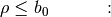 is doubled and 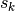 is recalculated
- 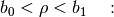 in the next step is maintained and is used
- 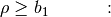 is accepted and is halved during the next iteration